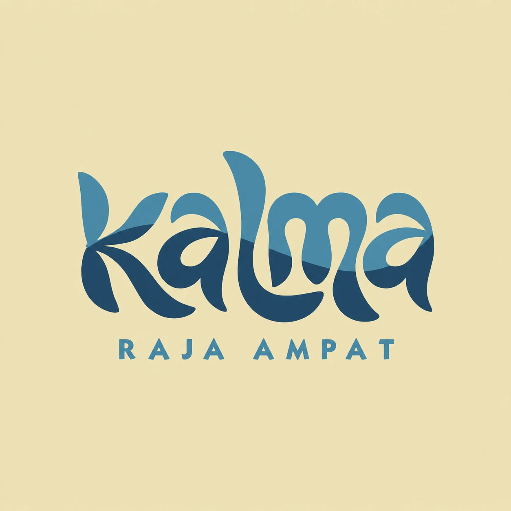

Di atas air
Bungalow Laguna
Kasur double, kelambu, teras pribadi dengan tangga langsung ke laut.
Rp 850.000 / malam / orang
Detail

Brand Identity Guidelines · v1.0 · 2026
Panduan ini menjaga Kalma tampil konsisten di website, media sosial, cetakan, sampai papan nama di dermaga. Pakai sebagai rujukan tiap kali membuat apa pun atas nama Kalma.
Catatan: harga, jumlah kamar, nama pulau, rating, dan detail fasilitas pada contoh di dokumen ini adalah placeholder. Ganti dengan data asli Kalma.
Siapa Kalma, untuk siapa, dan rasa apa yang ingin ditinggalkan di benak tamu.
Makna nama
“Kalma” — dari calm: ketenangan yang ditemukan saat waktu melambat di tengah laut Raja Ampat.
Kalma adalah homestay di Raja Ampat, Papua Barat Daya: rumah kayu sederhana di tepi air jernih, dikelola dengan keramahan lokal. Kami tidak menjual kemewahan. Kami menawarkan jeda: bangun dengan suara ombak, snorkeling dari depan kamar, makan ikan bakar bersama keluarga tuan rumah.
Gelombang yang membelah logo menjadi dua warna adalah garis permukaan air: bagian atas adalah laguna yang terang, bagian bawah adalah kedalaman laut yang tenang. Huruf-hurufnya meliuk seperti daun kelapa dan sirip ikan.
Visi
Tempat tamu pulang dengan pikiran yang lebih ringan dan cerita tentang orang-orangnya, bukan hanya pemandangannya.
Misi
Positioning
Berbeda dari resort mewah dan dive camp yang padat jadwal, Kalma menawarkan ketenangan, kehangatan keluarga lokal, dan akses langsung ke terumbu.
Nilai inti
Kepribadian brand
Tagline
Slow down, Raja Ampat style.
Alternatif: “Pelan-pelan saja di Raja Ampat.” · “Where the reef meets home.”
Logo Kalma adalah wordmark tulisan tangan dengan garis gelombang dua warna, ditambah descriptor “RAJA AMPAT”. Logo adalah aset paling berharga: jangan digambar ulang, pakai file resmi.
① Wordmark “Kalma”: huruf organik yang meliuk seperti daun dan sirip. Bentuknya unik dan tidak boleh diganti font lain.
② Garis gelombang: membagi huruf menjadi Laguna (atas) dan Laut Dalam (bawah). Ini “signature” Kalma dan menjadi sumber elemen grafis gelombang.
③ Descriptor “RAJA AMPAT”: kapital dengan spasi huruf lebar, menegaskan lokasi. Boleh dilepas hanya pada versi wordmark (lihat varian).
Catatan: file logo saat ini berbentuk PNG resolusi tinggi. Untuk cetak besar (spanduk, papan nama) mintakan versi vektor (SVG/AI/PDF) dari desainer logo.
Pilih varian sesuai latar dan ruang yang tersedia. Urutan prioritas: Utama → Putih → Monokrom → Wordmark → Monogram.
A. Utama (full color)Default. Di atas Pasir, Kerang, atau putih.
B. Putih (reversed)Di atas Laut Dalam, Tinta Malam, atau foto gelap.
C. Monokrom Laut DalamCetak 1 warna, stempel, sablon, faktur.
D. WordmarkTanpa descriptor. Untuk header website, ruang horizontal sempit, atau saat “Raja Ampat” sudah jelas dari konteks.
E. Monogram “K” / IkonFavicon, foto profil media sosial, ikon aplikasi, gantungan kunci, watermark.
F. Monokrom PasirDi atas Laguna atau Laut Dalam untuk nuansa hangat (merchandise, tote bag).
Sisakan ruang kosong di sekeliling logo minimal X, yaitu tinggi huruf “a” kecil pada wordmark (± 25% tinggi logo). Tidak boleh ada teks, foto, atau tepi kertas di dalam area ini.
Di bawah ukuran ini descriptor “RAJA AMPAT” tidak terbaca. Gunakan wordmark atau monogram.
✓ Pasir: paling ideal
✓ Putih / Kerang
✓ Laut Dalam + logo putih
✓ Foto gelap/tenang + logo putih
✕ Jangan meregangkan / memipihkan
✕ Jangan memutar
✕ Jangan mengganti warna di luar palet
✕ Jangan diberi bayangan, glow, atau efek 3D
✕ Jangan logo berwarna di atas latar biru (kontras hilang)
✕ Jangan di atas latar ramai
✕ Jangan transparan/pudar (kecuali watermark foto)
✕ Jangan mengetik ulang dengan font lain
Palet diambil dari logo dan alam Raja Ampat: pasir pantai, laguna toska, laut dalam, karang, dan hutan pulau karst.
Latar utama brand. Halaman website, kartu nama, kemasan.
Elemen grafis, ilustrasi, ikon, garis gelombang. Untuk teks kecil gunakan Laguna Dalam.
Judul, tombol utama, section gelap, footer, logo monokrom.
Permukaan kartu, section selang-seling.
Border, garis pemisah, ilustrasi.
Link, eyebrow, teks biru (lolos AA).
Teks body, footer. Pengganti hitam.
Aksen: tombol “Pesan Sekarang”, highlight promo.
Teks aksen/harga di latar terang.
Label eco, aktivitas alam, status berhasil.
Pasir dominan agar kesan hangat dan lapang. Biru menjadi “suara” brand. Karang hanya untuk hal yang harus diklik.
Nilai CMYK adalah perkiraan. Selalu minta proof cetak ke percetakan, terutama untuk Pasir yang mudah bergeser jadi kuning.
Dua keluarga huruf gratis (Google Fonts) yang melengkapi karakter logo: serif lembut untuk rasa hangat, sans buatan Indonesia untuk keterbacaan.
Display · Judul
Aa
ABCDEFGHIJKLMNOPQRSTUVWXYZ
abcdefghijklmnopqrstuvwxyz
0123456789 & ? ! Rp
Serif dengan sudut membulat (atur sumbu SOFT ke 100) sehingga senada dengan lekuk logo. Pakai untuk H1–H3, kutipan, angka harga. Bobot: Light 300, Regular 400, Medium 500. Italic untuk kutipan & penekanan emosional.
Teks · UI
Aa
ABCDEFGHIJKLMNOPQRSTUVWXYZ
abcdefghijklmnopqrstuvwxyz
0123456789 & ? ! Rp
Sans geometris karya desainer Indonesia (Tokotype). Bersih, ramah, sangat terbaca di layar kecil. Pakai untuk body, navigasi, tombol, form, dan label kapital ber-spasi lebar ala descriptor “RAJA AMPAT”. Bobot: Regular 400, Medium 500, SemiBold 600, Bold 700.
letter-spacing: 0.3em, gema descriptor logo.Fallback bila font tidak tersedia (mis. di Word/Canva): Georgia untuk judul, Arial/Segoe UI untuk teks.
Semua elemen grafis diturunkan dari garis gelombang di logo: lembut, mengalir, tanpa sudut tajam.
Pemisah gelombangTransisi antar-section di website dan bagian bawah poster. Maks. 2 lapis.
Pola riakLatar halus untuk kemasan, kertas surat, background story. Opasitas 15–35%.
Pola riak (gelap)Untuk footer, kartu nama belakang, merchandise.
Bingkai foto berbentuk lengkung (arch) atau blob seperti batu karang. Radius besar, tidak ada sudut tajam 90° pada elemen dekoratif.
Garis (outline) 1.75 px, ujung membulat, satu warna Laut Dalam di atas lingkaran/kotak Pasir. Rekomendasi set: Lucide atau Phosphor (Regular).
Foto adalah 70% wajah website Kalma. Arah gayanya: cahaya alami, tenang, jujur, dan selalu ada rasa “manusia” di dalamnya.
Kotak di atas adalah ilustrasi suasana warna; ganti dengan foto asli Kalma.
Kalma berbicara seperti tuan rumah yang ramah menjemput tamu di dermaga: santai, hangat, tidak berlebihan.
Kalimat pendek, ritme pelan. Tidak memakai tanda seru beruntun.
Sapa dengan “kamu”/“you”. Hindari superlatif kosong seperti “terbaik se-Indonesia”.
Sebut apa adanya: listrik jam berapa, sinyal di mana, berapa lama perjalanan.
Sisipkan kata lokal secukupnya (mis. “Selamat datang di kampung”) dan pesan menjaga laut.
| Situasi | ✓ Gaya Kalma | ✕ Bukan Kalma |
|---|---|---|
| Hero website | Bangun dengan suara ombak. Sisanya, biar laut yang atur. | RESORT TERBAIK DAN TERMURAH DI RAJA AMPAT!!! |
| Tombol | Cek ketersediaan · Pesan kamar · Tanya via WhatsApp | Klik di sini · Submit · BURUAN PESAN |
| Info praktis | Listrik menyala pukul 18.00–06.00. Sinyal ada di dermaga, cukup untuk kabar ke rumah. | Fasilitas lengkap 24 jam. |
| Caption IG | Pagi ini lautnya diam sekali. Kopi, dermaga, dan tidak ada rencana. 🌊 | Guys wajib banget ke sini sih, auto healing parah!!! 😍😍🔥 |
| English | Slow mornings, clear water, and a family that cooks like you're one of them. | Luxury paradise experience of a lifetime! |
Bahasa: website dwibahasa Indonesia & English. Mayoritas tamu Raja Ampat adalah wisatawan mancanegara, jadi English diutamakan di halaman pemesanan.
Dasar UI untuk website. Semua nilai ada di brand/tokens.css; pakai token, jangan menulis hex langsung.
Kasur double, kelambu, teras pribadi dengan tangga langsung ke laut.
Contoh penerapan identitas di titik-titik sentuh utama.
Homestay · Raja Ampat
Rumah kayu di tepi laguna, makan bersama keluarga lokal, dan karang tepat di depan kamar.
Kartu nama85 × 55 mm. Depan Pasir + logo utama; belakang Laut Dalam.
Instagram feedSelang-seling: kutipan di Pasir, foto + label Kerang, monogram sebagai foto profil.
Papan nama, gantungan kunci, tote bagNama kamar memakai nama alam lokal (Laguna, Karang, Manta, Pari).
Semua file ada di folder brand/assets/. Latar transparan kecuali file original.
kalma-logo-primary.pngLogo utama, transparankalma-logo-white.pngLogo putihkalma-logo-mono-deepsea.pngMonokrom Laut Dalamkalma-logo-mono-sand.pngMonokrom Pasirkalma-wordmark.pngWordmark tanpa descriptor
kalma-wordmark-white.pngWordmark putih
kalma-monogram.pngMonogram “K”, transparankalma-icon-sand.png / -deepsea.pngIkon 512 px (profil sosmed)
favicon.ico · favicon-32.png · apple-touch-icon.pngIkon website
kalma-logo-original.pngFile asli 1254 px (latar pasir)tokens.cssDesign tokens untuk website